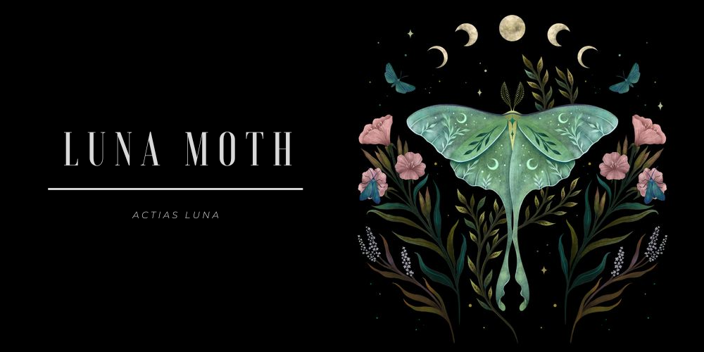

Podstawowe informacje
Luna moth (Actias luna), zwana księżycówką amerykańską, ćma występująca na terenie Pólnocnej Ameryki z rodziny Pawicowatych.
Dorosłe osobniki posiadają zielono-limonkowe skrzydła o rozpiętości od 8 do nawet 12 cm.
Na każdym z nich znajduje się plama imitująca oczy zwierzęcia - mają one odstraszyć potenjalnych drapieżników.
Bardzo charakterystyczne są długie końcówki tylynch skrzydeł.
Formy dorosłe (motyle) mają uwstecznione narządy gębowe i nie są zdolne do pobierania pokarmu żyją więc około tygodnia.